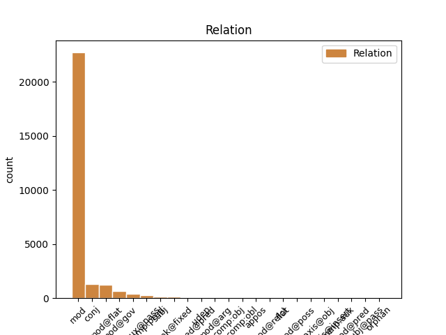
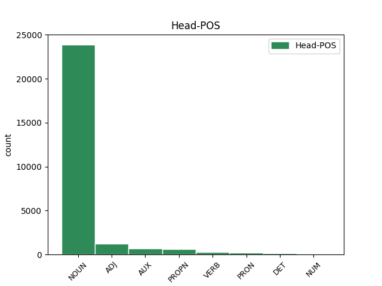
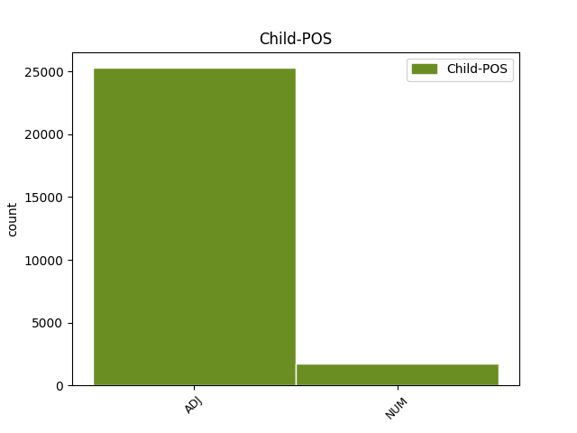

Distribution of features within this leaf



Agreement Rules sorted by frequency.
- When the dependent token is the modifer(mod) of the head token, and the dependent token is ADJ.
1 W _ _ _ _ 0 _ _ _
2 przeciwieństwie _ _ _ _ 0 _ _ _
3 do _ _ _ _ 0 _ _ _
4 pozostałej pozostały ADJ adj:sg:gen:f:pos Case=Gen|Degree=Pos|Gender=Fem|Number=Sing 5 mod _ _
5 trójki trójka NOUN subst:sg:gen:f Case=Gen|Gender=Fem|Number=Sing 0 _ _ _
6 zachowywał _ _ _ _ 0 _ _ _
7 się _ _ _ _ 0 _ _ _
8 tak _ _ _ _ 0 _ _ _
9 , _ _ _ _ 0 _ _ _
10 jakby _ _ _ _ 0 _ _ _
11 przygoda _ _ _ _ 0 _ _ _
12 go _ _ _ _ 0 _ _ _
13 cieszyła _ _ _ _ 0 _ _ _
14 . _ _ _ _ 0 _ _ _
1 W _ _ _ _ 0 _ _ _
2 tych _ _ _ _ 0 _ _ _
3 ramach _ _ _ _ 0 _ _ _
4 prezydencja _ _ _ _ 0 _ _ _
5 będzie _ _ _ _ 0 _ _ _
6 koordynowała _ _ _ _ 0 _ _ _
7 rozwiązania _ _ _ _ 0 _ _ _
8 , _ _ _ _ 0 _ _ _
9 które _ _ _ _ 0 _ _ _
10 cieszą _ _ _ _ 0 _ _ _
11 się _ _ _ _ 0 _ _ _
12 największym _ _ _ _ 0 _ _ _
13 poparciem _ _ _ _ 0 _ _ _
14 w _ _ _ _ 0 _ _ _
15 Unii unia NOUN subst:sg:loc:f Case=Loc|Gender=Fem|Number=Sing 0 _ _ _
16 Europejskiej europejski ADJ adj:sg:loc:f:pos Case=Loc|Degree=Pos|Gender=Fem|Number=Sing 15 mod@flat _ _
17 i _ _ _ _ 0 _ _ _
18 jednocześnie _ _ _ _ 0 _ _ _
19 zapewniają _ _ _ _ 0 _ _ _
20 długotrwałą _ _ _ _ 0 _ _ _
21 stabilizację _ _ _ _ 0 _ _ _
22 w _ _ _ _ 0 _ _ _
23 regionie _ _ _ _ 0 _ _ _
24 . _ _ _ _ 0 _ _ _
1 Prawdopodobnie _ _ _ _ 0 _ _ _
2 najpoważniej _ _ _ _ 0 _ _ _
3 ucierpi _ _ _ _ 0 _ _ _
4 sektor _ _ _ _ 0 _ _ _
5 przemysłowy przemysłowy ADJ adj:sg:nom:m3:pos Animacy=Inan|Case=Nom|Degree=Pos|Gender=Masc|Number=Sing 0 _ _ _
6 i _ _ _ _ 0 _ _ _
7 finansowy finansowy ADJ adj:sg:nom:m3:pos Animacy=Inan|Case=Nom|Degree=Pos|Gender=Masc|Number=Sing 5 conj _ SpaceAfter=No
8 . _ _ _ _ 0 _ _ _
1 Również _ _ _ _ 0 _ _ _
2 Republika _ _ _ _ 0 _ _ _
3 Federalna _ _ _ _ 0 _ _ _
4 Niemiec _ _ _ _ 0 _ _ _
5 przedstawiła _ _ _ _ 0 _ _ _
6 na _ _ _ _ 0 _ _ _
7 swą _ _ _ _ 0 _ _ _
8 obronę _ _ _ _ 0 _ _ _
9 , _ _ _ _ 0 _ _ _
10 zarówno _ _ _ _ 0 _ _ _
11 w _ _ _ _ 0 _ _ _
12 ramach _ _ _ _ 0 _ _ _
13 postępowania _ _ _ _ 0 _ _ _
14 poprzedzającego _ _ _ _ 0 _ _ _
15 wniesienie _ _ _ _ 0 _ _ _
16 skargi _ _ _ _ 0 _ _ _
17 , _ _ _ _ 0 _ _ _
18 jak _ _ _ _ 0 _ _ _
19 również _ _ _ _ 0 _ _ _
20 w _ _ _ _ 0 _ _ _
21 niniejszym _ _ _ _ 0 _ _ _
22 postępowaniu _ _ _ _ 0 _ _ _
23 , _ _ _ _ 0 _ _ _
24 argumenty _ _ _ _ 0 _ _ _
25 dotyczące _ _ _ _ 0 _ _ _
26 tych _ _ _ _ 0 _ _ _
27 dwóch dwa NUM num:pl:gen:n:congr:ncol Case=Gen|Gender=Neut|Number=Plur|NumForm=Word 28 mod _ _
28 pojęć pojęcie NOUN subst:pl:gen:n:ncol Case=Gen|Gender=Neut|Number=Plur 0 _ _ _
29 . _ _ _ _ 0 _ _ _
1 Zniknął _ _ _ _ 0 _ _ _
2 na _ _ _ _ 0 _ _ _
3 6 6 NUM num:pl:acc:m3:rec Animacy=Inan|Case=Acc|Gender=Masc|Number=Plur|NumForm=Digit|NumType=Card 4 mod@gov _ _
4 dni dzień NOUN subst:pl:gen:m3 Animacy=Inan|Case=Gen|Gender=Masc|Number=Plur 0 _ _ _
5 zanim _ _ _ _ 0 _ _ _
6 poproszono _ _ _ _ 0 _ _ _
7 nas _ _ _ _ 0 _ _ _
8 o _ _ _ _ 0 _ _ _
9 zamknięcie _ _ _ _ 0 _ _ _
10 rosyjskich _ _ _ _ 0 _ _ _
11 Wrót _ _ _ _ 0 _ _ _
12 . _ _ _ _ 0 _ _ _
1 Obecnie _ _ _ _ 0 _ _ _
2 ponad _ _ _ _ 0 _ _ _
3 50 _ _ _ _ 0 _ _ _
4 % _ _ _ _ 0 _ _ _
5 leków _ _ _ _ 0 _ _ _
6 stosowanych _ _ _ _ 0 _ _ _
7 w _ _ _ _ 0 _ _ _
8 Europie _ _ _ _ 0 _ _ _
9 w _ _ _ _ 0 _ _ _
10 leczeniu _ _ _ _ 0 _ _ _
11 dzieci _ _ _ _ 0 _ _ _
12 nie _ _ _ _ 0 _ _ _
13 przeszło _ _ _ _ 0 _ _ _
14 badań _ _ _ _ 0 _ _ _
15 klinicznych _ _ _ _ 0 _ _ _
16 w _ _ _ _ 0 _ _ _
17 tym _ _ _ _ 0 _ _ _
18 zakresie _ _ _ _ 0 _ _ _
19 ani _ _ _ _ 0 _ _ _
20 nie _ _ _ _ 0 _ _ _
21 zostało zostać AUX praet:sg:n:perf Aspect=Perf|Gender=Neut|Mood=Ind|Number=Sing|Tense=Past|VerbForm=Fin|Voice=Act 0 _ _ _
22 dopuszczonych dopuścić ADJ ppas:pl:gen:n:perf:aff Aspect=Perf|Case=Gen|Gender=Neut|Number=Plur|Polarity=Pos|VerbForm=Part|Voice=Pass 21 comp:aux@pass _ _
23 do _ _ _ _ 0 _ _ _
24 obrotu _ _ _ _ 0 _ _ _
25 z _ _ _ _ 0 _ _ _
26 takim _ _ _ _ 0 _ _ _
27 przeznaczeniem _ _ _ _ 0 _ _ _
28 . _ _ _ _ 0 _ _ _
1 To _ _ _ _ 0 _ _ _
2 było być AUX praet:sg:n:imperf Aspect=Imp|Gender=Neut|Mood=Ind|Number=Sing|Tense=Past|VerbForm=Fin|Voice=Act 0 _ _ _
3 by _ _ _ _ 0 _ _ _
4 zabawne zabawny ADJ adj:sg:nom:n:pos Case=Nom|Degree=Pos|Gender=Neut|Number=Sing 2 comp:pred _ SpaceAfter=No
5 , _ _ _ _ 0 _ _ _
6 gdyby _ _ _ _ 0 _ _ _
7 nie _ _ _ _ 0 _ _ _
8 oferowali _ _ _ _ 0 _ _ _
9 tej _ _ _ _ 0 _ _ _
10 forsy _ _ _ _ 0 _ _ _
11 . _ _ _ _ 0 _ _ _
1 Wszyscy _ _ _ _ 0 _ _ _
2 podzielamy _ _ _ _ 0 _ _ _
3 tę ten DET adj:sg:acc:f:pos Case=Acc|Gender=Fem|Number=Sing|PronType=Dem 0 _ _ _
4 samą sam ADJ adj:sg:acc:f:pos Case=Acc|Degree=Pos|Gender=Fem|Number=Sing 3 unk@fixed _ _
5 ideę _ _ _ _ 0 _ _ _
6 : _ _ _ _ 0 _ _ _
7 mamy _ _ _ _ 0 _ _ _
8 swobodę _ _ _ _ 0 _ _ _
9 przepływu _ _ _ _ 0 _ _ _
10 orzeczeń _ _ _ _ 0 _ _ _
11 sądowych _ _ _ _ 0 _ _ _
12 . _ _ _ _ 0 _ _ _
1 Mój _ _ _ _ 0 _ _ _
2 rozmówca _ _ _ _ 0 _ _ _
3 okazał _ _ _ _ 0 _ _ _
4 się _ _ _ _ 0 _ _ _
5 sympatycznym _ _ _ _ 0 _ _ _
6 maluchem _ _ _ _ 0 _ _ _
7 , _ _ _ _ 0 _ _ _
8 a _ _ _ _ 0 _ _ _
9 pozostali pozostały ADJ adj:pl:nom:m1:pos Animacy=Hum|Case=Nom|Degree=Pos|Gender=Masc|Number=Plur 10 subj _ _
10 wydawali wydawać VERB praet:pl:m1:imperf Animacy=Hum|Aspect=Imp|Gender=Masc|Mood=Ind|Number=Plur|Tense=Past|VerbForm=Fin|Voice=Act 0 _ _ _
11 się _ _ _ _ 0 _ _ _
12 teraz _ _ _ _ 0 _ _ _
13 zupełnie _ _ _ _ 0 _ _ _
14 niegroźni _ _ _ _ 0 _ _ _
15 , _ _ _ _ 0 _ _ _
16 roztańczeni _ _ _ _ 0 _ _ _
17 i _ _ _ _ 0 _ _ _
18 weseli _ _ _ _ 0 _ _ _
19 . _ _ _ _ 0 _ _ _
1 Przenieść _ _ _ _ 0 _ _ _
2 ilościowo _ _ _ _ 0 _ _ _
3 do _ _ _ _ 0 _ _ _
4 kolby _ _ _ _ 0 _ _ _
5 pomiarowej _ _ _ _ 0 _ _ _
6 o _ _ _ _ 0 _ _ _
7 pojemnosci _ _ _ _ 0 _ _ _
8 250 250 NUM num:pl:gen:m3:congr Animacy=Inan|Case=Gen|Gender=Masc|Number=Plur|NumForm=Digit|NumType=Card 0 _ _ _
9 lub _ _ _ _ 0 _ _ _
10 500 500 NUM num:pl:gen:m3:congr Animacy=Inan|Case=Gen|Gender=Masc|Number=Plur|NumForm=Digit|NumType=Card 8 conj _ _
11 ml _ _ _ _ 0 _ _ _
12 ( _ _ _ _ 0 _ _ _
13 patrz _ _ _ _ 0 _ _ _
14 tabela _ _ _ _ 0 _ _ _
15 ) _ _ _ _ 0 _ _ _
16 . _ _ _ _ 0 _ _ _
1 Mój _ _ _ _ 0 _ _ _
2 rozmówca _ _ _ _ 0 _ _ _
3 okazał _ _ _ _ 0 _ _ _
4 się _ _ _ _ 0 _ _ _
5 sympatycznym _ _ _ _ 0 _ _ _
6 maluchem _ _ _ _ 0 _ _ _
7 , _ _ _ _ 0 _ _ _
8 a _ _ _ _ 0 _ _ _
9 pozostali _ _ _ _ 0 _ _ _
10 wydawali wydawać VERB praet:pl:m1:imperf Animacy=Hum|Aspect=Imp|Gender=Masc|Mood=Ind|Number=Plur|Tense=Past|VerbForm=Fin|Voice=Act 0 _ _ _
11 się _ _ _ _ 0 _ _ _
12 teraz _ _ _ _ 0 _ _ _
13 zupełnie _ _ _ _ 0 _ _ _
14 niegroźni niegroźny ADJ adj:pl:nom:m1:pos Animacy=Hum|Case=Nom|Degree=Pos|Gender=Masc|Number=Plur 10 comp:pred@pred _ SpaceAfter=No
15 , _ _ _ _ 0 _ _ _
16 roztańczeni _ _ _ _ 0 _ _ _
17 i _ _ _ _ 0 _ _ _
18 weseli _ _ _ _ 0 _ _ _
19 . _ _ _ _ 0 _ _ _
1 - _ _ _ _ 0 _ _ _
2 Siódmego siódmy ADJ adj:sg:gen:m3:pos Animacy=Inan|Case=Gen|Degree=Pos|Gender=Masc|Number=Sing 6 udep _ _
3 sierpnia _ _ _ _ 0 _ _ _
4 1965 _ _ _ _ 0 _ _ _
5 roku _ _ _ _ 0 _ _ _
6 zaciągnął zaciągnąć VERB praet:sg:m1:perf Animacy=Hum|Aspect=Perf|Gender=Masc|Mood=Ind|Number=Sing|Tense=Past|VerbForm=Fin|Voice=Act 0 _ _ _
7 mnie _ _ _ _ 0 _ _ _
8 do _ _ _ _ 0 _ _ _
9 swojego _ _ _ _ 0 _ _ _
10 domku _ _ _ _ 0 _ _ _
11 . _ _ _ _ 0 _ _ _
1 W _ _ _ _ 0 _ _ _
2 tym _ _ _ _ 0 _ _ _
3 roku _ _ _ _ 0 _ _ _
4 jestem _ _ _ _ 0 _ _ _
5 sprawozdawczynią _ _ _ _ 0 _ _ _
6 w _ _ _ _ 0 _ _ _
7 sprawie _ _ _ _ 0 _ _ _
8 budżetu _ _ _ _ 0 _ _ _
9 i _ _ _ _ 0 _ _ _
10 zapewniam _ _ _ _ 0 _ _ _
11 pana _ _ _ _ 0 _ _ _
12 komisarza _ _ _ _ 0 _ _ _
13 Dalli _ _ _ _ 0 _ _ _
14 , _ _ _ _ 0 _ _ _
15 że _ _ _ _ 0 _ _ _
16 będziemy _ _ _ _ 0 _ _ _
17 czujni _ _ _ _ 0 _ _ _
18 w _ _ _ _ 0 _ _ _
19 sprawach sprawa NOUN subst:pl:loc:f Case=Loc|Gender=Fem|Number=Plur 0 _ _ _
20 budżetowych budżetowy ADJ adj:pl:loc:f:pos Case=Loc|Degree=Pos|Gender=Fem|Number=Plur 19 mod@arg _ _
21 i _ _ _ _ 0 _ _ _
22 alokacji _ _ _ _ 0 _ _ _
23 środków _ _ _ _ 0 _ _ _
24 w _ _ _ _ 0 _ _ _
25 dziedzinie _ _ _ _ 0 _ _ _
26 polityki _ _ _ _ 0 _ _ _
27 ochrony _ _ _ _ 0 _ _ _
28 konsumentów _ _ _ _ 0 _ _ _
29 . _ _ _ _ 0 _ _ _
1 — _ _ _ _ 0 _ _ _
2 Ale _ _ _ _ 0 _ _ _
3 ja _ _ _ _ 0 _ _ _
4 nie _ _ _ _ 0 _ _ _
5 mam _ _ _ _ 0 _ _ _
6 czterdziestu czterdzieści NUM num:pl:gen:m3:congr:ncol Animacy=Inan|Case=Gen|Gender=Masc|Number=Plur|NumForm=Word 0 _ _ _
7 pięciu pięć NUM num:pl:gen:m3:congr:ncol Animacy=Inan|Case=Gen|Gender=Masc|Number=Plur|NumForm=Word 6 flat _ _
8 lat _ _ _ _ 0 _ _ _
9 . _ _ _ _ 0 _ _ _
1 Powiedziane _ _ _ _ 0 _ _ _
2 zostało _ _ _ _ 0 _ _ _
3 już _ _ _ _ 0 _ _ _
4 dość _ _ _ _ 0 _ _ _
5 i _ _ _ _ 0 _ _ _
6 oboje oba NUM num:pl:nom:m1:rec:col Animacy=Hum|Case=Nom|Gender=Masc|Number=Plur|NumForm=Word|NumType=Sets 7 subj _ _
7 stali stać VERB praet:pl:m1:imperf Animacy=Hum|Aspect=Imp|Gender=Masc|Mood=Ind|Number=Plur|Tense=Past|VerbForm=Fin|Voice=Act 0 _ _ _
8 w _ _ _ _ 0 _ _ _
9 milczeniu _ _ _ _ 0 _ _ _
10 , _ _ _ _ 0 _ _ _
11 patrząc _ _ _ _ 0 _ _ _
12 na _ _ _ _ 0 _ _ _
13 pusty _ _ _ _ 0 _ _ _
14 horyzont _ _ _ _ 0 _ _ _
15 . _ _ _ _ 0 _ _ _
1 Czasami _ _ _ _ 0 _ _ _
2 to to PRON subst:sg:nom:n:ncol Case=Nom|Gender=Neut|Number=Sing|PronType=Dem 0 _ _ _
3 , _ _ _ _ 0 _ _ _
4 co _ _ _ _ 0 _ _ _
5 najpiękniejsze piękny ADJ adj:sg:nom:n:sup Case=Nom|Degree=Sup|Gender=Neut|Number=Sing 2 mod@relcl _ SpaceAfter=No
6 . _ _ _ _ 0 _ _ _
7 . _ _ _ _ 0 _ _ _
8 . _ _ _ _ 0 _ _ _
9 jest _ _ _ _ 0 _ _ _
10 najbardziej _ _ _ _ 0 _ _ _
11 niewinne _ _ _ _ 0 _ _ _
12 , _ _ _ _ 0 _ _ _
13 i _ _ _ _ 0 _ _ _
14 omija _ _ _ _ 0 _ _ _
15 nas _ _ _ _ 0 _ _ _
16 . _ _ _ _ 0 _ _ _
1 Głosowanie _ _ _ _ 0 _ _ _
2 odbędzie _ _ _ _ 0 _ _ _
3 się _ _ _ _ 0 _ _ _
4 w _ _ _ _ 0 _ _ _
5 piątek piątek NOUN subst:sg:acc:m3 Animacy=Inan|Case=Acc|Gender=Masc|Number=Sing 0 _ _ _
6 24 24 ADJ adj:sg:gen:m3:pos Animacy=Inan|Case=Gen|Degree=Pos|Gender=Masc|Number=Sing|NumForm=Digit|NumType=Ord 5 appos _ _
7 kwietnia _ _ _ _ 0 _ _ _
8 2009 _ _ _ _ 0 _ _ _
9 r _ _ _ _ 0 _ _ _
10 . _ _ _ _ 0 _ _ _
1 Czy _ _ _ _ 0 _ _ _
2 zatem _ _ _ _ 0 _ _ _
3 sytuacja _ _ _ _ 0 _ _ _
4 dwóch _ _ _ _ 0 _ _ _
5 najludniejszych _ _ _ _ 0 _ _ _
6 krajów _ _ _ _ 0 _ _ _
7 , _ _ _ _ 0 _ _ _
8 gdzie _ _ _ _ 0 _ _ _
9 mieszka _ _ _ _ 0 _ _ _
10 więcej _ _ _ _ 0 _ _ _
11 niż _ _ _ _ 0 _ _ _
12 jedna jeden ADJ adj:sg:nom:f:pos Case=Nom|Degree=Pos|Gender=Fem|Number=Sing 0 _ _ _
13 trzecia trzeci ADJ adj:sg:nom:f:pos Case=Nom|Degree=Pos|Gender=Fem|Number=Sing 12 comp:obl _ _
14 ludzkości _ _ _ _ 0 _ _ _
15 , _ _ _ _ 0 _ _ _
16 dowodzi _ _ _ _ 0 _ _ _
17 , _ _ _ _ 0 _ _ _
18 że _ _ _ _ 0 _ _ _
19 XIX-wieczny _ _ _ _ 0 _ _ _
20 demograf _ _ _ _ 0 _ _ _
21 Tomasz _ _ _ _ 0 _ _ _
22 Malthus _ _ _ _ 0 _ _ _
23 miał _ _ _ _ 0 _ _ _
24 rację _ _ _ _ 0 _ _ _
25 ? _ _ _ _ 0 _ _ _
1 Wiedziony _ _ _ _ 0 _ _ _
2 odruchem _ _ _ _ 0 _ _ _
3 warunkowym _ _ _ _ 0 _ _ _
4 , _ _ _ _ 0 _ _ _
5 wysunął wysunąć VERB praet:sg:m1:perf Animacy=Hum|Aspect=Perf|Gender=Masc|Mood=Ind|Number=Sing|Tense=Past|VerbForm=Fin|Voice=Act 0 _ _ _
6 em _ _ _ _ 0 _ _ _
7 za _ _ _ _ 0 _ _ _
8 siebie _ _ _ _ 0 _ _ _
9 na _ _ _ _ 0 _ _ _
10 oślep _ _ _ _ 0 _ _ _
11 prawy prawy ADJ adj:sg:acc:m3:pos Animacy=Inan|Case=Acc|Degree=Pos|Gender=Masc|Number=Sing 5 comp:obj _ _
12 prosty _ _ _ _ 0 _ _ _
13 , _ _ _ _ 0 _ _ _
14 na _ _ _ _ 0 _ _ _
15 który _ _ _ _ 0 _ _ _
16 drapieżnik _ _ _ _ 0 _ _ _
17 prawie _ _ _ _ 0 _ _ _
18 sam _ _ _ _ 0 _ _ _
19 się _ _ _ _ 0 _ _ _
20 nadział _ _ _ _ 0 _ _ _
21 i _ _ _ _ 0 _ _ _
22 to _ _ _ _ 0 _ _ _
23 tak _ _ _ _ 0 _ _ _
24 pechowo _ _ _ _ 0 _ _ _
25 , _ _ _ _ 0 _ _ _
26 że _ _ _ _ 0 _ _ _
27 rozgniótł _ _ _ _ 0 _ _ _
28 sobie _ _ _ _ 0 _ _ _
29 moją _ _ _ _ 0 _ _ _
30 pięścią _ _ _ _ 0 _ _ _
31 zapalony _ _ _ _ 0 _ _ _
32 papieros _ _ _ _ 0 _ _ _
33 na _ _ _ _ 0 _ _ _
34 wargach _ _ _ _ 0 _ _ _
35 . _ _ _ _ 0 _ _ _
1 W _ _ _ _ 0 _ _ _
2 czasie _ _ _ _ 0 _ _ _
3 kiedy _ _ _ _ 0 _ _ _
4 hakerzy _ _ _ _ 0 _ _ _
5 należący _ _ _ _ 0 _ _ _
6 do _ _ _ _ 0 _ _ _
7 znanej _ _ _ _ 0 _ _ _
8 brazylijskiej _ _ _ _ 0 _ _ _
9 grupy _ _ _ _ 0 _ _ _
10 piratów _ _ _ _ 0 _ _ _
11 " _ _ _ _ 0 _ _ _
12 Crimeboys _ _ _ _ 0 _ _ _
13 " _ _ _ _ 0 _ _ _
14 usiłowali _ _ _ _ 0 _ _ _
15 dokonać _ _ _ _ 0 _ _ _
16 włamania _ _ _ _ 0 _ _ _
17 , _ _ _ _ 0 _ _ _
18 strona _ _ _ _ 0 _ _ _
19 była być AUX praet:sg:f:imperf Aspect=Imp|Gender=Fem|Mood=Ind|Number=Sing|Tense=Past|VerbForm=Fin|Voice=Act 0 _ _ _
20 aktualizowana aktualizować ADJ ppas:sg:nom:f:imperf:aff Aspect=Imp|Case=Nom|Gender=Fem|Number=Sing|Polarity=Pos|VerbForm=Part|Voice=Pass 19 comp:aux _ _
21 i _ _ _ _ 0 _ _ _
22 dzięki _ _ _ _ 0 _ _ _
23 temu _ _ _ _ 0 _ _ _
24 zabezpieczona _ _ _ _ 0 _ _ _
25 . _ _ _ _ 0 _ _ _
1 Dlatego _ _ _ _ 0 _ _ _
2 też _ _ _ _ 0 _ _ _
3 nie _ _ _ _ 0 _ _ _
4 jestem _ _ _ _ 0 _ _ _
5 przeciwny _ _ _ _ 0 _ _ _
6 przedmiotowej _ _ _ _ 0 _ _ _
7 poprawce _ _ _ _ 0 _ _ _
8 , _ _ _ _ 0 _ _ _
9 ale _ _ _ _ 0 _ _ _
10 uważam _ _ _ _ 0 _ _ _
11 , _ _ _ _ 0 _ _ _
12 że _ _ _ _ 0 _ _ _
13 nie _ _ _ _ 0 _ _ _
14 może _ _ _ _ 0 _ _ _
15 ona _ _ _ _ 0 _ _ _
16 wykluczać _ _ _ _ 0 _ _ _
17 głosowania _ _ _ _ 0 _ _ _
18 nad _ _ _ _ 0 _ _ _
19 kolejnymi _ _ _ _ 0 _ _ _
20 poprawkami _ _ _ _ 0 _ _ _
21 złożonymi _ _ _ _ 0 _ _ _
22 przez _ _ _ _ 0 _ _ _
23 grupę _ _ _ _ 0 _ _ _
24 Europejskiej _ _ _ _ 0 _ _ _
25 Partii _ _ _ _ 0 _ _ _
26 Ludowej _ _ _ _ 0 _ _ _
27 ( _ _ _ _ 0 _ _ _
28 Chrześcijańscy _ _ _ _ 0 _ _ _
29 Demokraci _ _ _ _ 0 _ _ _
30 ) _ _ _ _ 0 _ _ _
31 i _ _ _ _ 0 _ _ _
32 Europejskich _ _ _ _ 0 _ _ _
33 Demokratów _ _ _ _ 0 _ _ _
34 , _ _ _ _ 0 _ _ _
35 które _ _ _ _ 0 _ _ _
36 przewidują _ _ _ _ 0 _ _ _
37 , _ _ _ _ 0 _ _ _
38 że _ _ _ _ 0 _ _ _
39 wybrane _ _ _ _ 0 _ _ _
40 może _ _ _ _ 0 _ _ _
41 być _ _ _ _ 0 _ _ _
42 jedynie _ _ _ _ 0 _ _ _
43 prawo prawo NOUN subst:sg:nom:n:ncol Case=Nom|Gender=Neut|Number=Sing 0 _ _ _
44 jednego jeden ADJ adj:sg:gen:n:pos Case=Gen|Degree=Pos|Gender=Neut|Number=Sing 43 mod@poss _ _
45 z _ _ _ _ 0 _ _ _
46 27 _ _ _ _ 0 _ _ _
47 państw _ _ _ _ 0 _ _ _
48 członkowskich _ _ _ _ 0 _ _ _
49 . _ _ _ _ 0 _ _ _
1 Frobisher _ _ _ _ 0 _ _ _
2 zaoferował zaoferować VERB praet:sg:m1:perf Animacy=Hum|Aspect=Perf|Gender=Masc|Mood=Ind|Number=Sing|Tense=Past|VerbForm=Fin|Voice=Act 0 _ _ _
3 nam _ _ _ _ 0 _ _ _
4 100 100 NUM num:pl:acc:m3:rec Animacy=Inan|Case=Acc|Gender=Masc|Number=Plur|NumForm=Digit|NumType=Card 2 comp:obj _ _
5 milionów _ _ _ _ 0 _ _ _
6 . _ _ _ _ 0 _ _ _
7 . _ _ _ _ 0 _ _ _
8 . _ _ _ _ 0 _ _ _
9 i _ _ _ _ 0 _ _ _
10 zgodzili _ _ _ _ 0 _ _ _
11 śmy _ _ _ _ 0 _ _ _
12 się _ _ _ _ 0 _ _ _
13 przyjąć _ _ _ _ 0 _ _ _
14 . _ _ _ _ 0 _ _ _
1 Jego _ _ _ _ 0 _ _ _
2 oczy _ _ _ _ 0 _ _ _
3 mówiły mówić VERB praet:pl:n:imperf Aspect=Imp|Gender=Neut|Mood=Ind|Number=Plur|Tense=Past|VerbForm=Fin|Voice=Act 0 _ _ _
4 : _ _ _ _ 0 _ _ _
5 " _ _ _ _ 0 _ _ _
6 No _ _ _ _ 0 _ _ _
7 jasne jasny ADJ adj:sg:nom:n:pos Case=Nom|Degree=Pos|Gender=Neut|Number=Sing 3 parataxis@obj _ SpaceAfter=No
8 , _ _ _ _ 0 _ _ _
9 popełnił _ _ _ _ 0 _ _ _
10 em _ _ _ _ 0 _ _ _
11 nietakt _ _ _ _ 0 _ _ _
12 z _ _ _ _ 0 _ _ _
13 tymi _ _ _ _ 0 _ _ _
14 piętnastoma _ _ _ _ 0 _ _ _
15 dolarami _ _ _ _ 0 _ _ _
16 ! _ _ _ _ 0 _ _ _
1 - _ _ _ _ 0 _ _ _
2 Ale _ _ _ _ 0 _ _ _
3 ma _ _ _ _ 0 _ _ _
4 pani _ _ _ _ 0 _ _ _
5 fajne _ _ _ _ 0 _ _ _
6 buty _ _ _ _ 0 _ _ _
7 górskie _ _ _ _ 0 _ _ _
8 ! _ _ _ _ 0 _ _ _
9 - _ _ _ _ 0 _ _ _
10 chwali _ _ _ _ 0 _ _ _
11 pionierki _ _ _ _ 0 _ _ _
12 dziewczyny _ _ _ _ 0 _ _ _
13 idącej _ _ _ _ 0 _ _ _
14 przed _ _ _ _ 0 _ _ _
15 nim _ _ _ _ 0 _ _ _
16 turysta _ _ _ _ 0 _ _ _
17 ze _ _ _ _ 0 _ _ _
18 Śląska _ _ _ _ 0 _ _ _
19 , _ _ _ _ 0 _ _ _
20 który _ _ _ _ 0 _ _ _
21 zabrał _ _ _ _ 0 _ _ _
22 do _ _ _ _ 0 _ _ _
23 Doliny _ _ _ _ 0 _ _ _
24 Pięciu pięć NUM num:pl:gen:m3:congr Animacy=Inan|Case=Gen|Gender=Masc|Number=Plur|NumForm=Word 25 mod@flat _ _
25 Stawów staw NOUN subst:pl:gen:m3 Animacy=Inan|Case=Gen|Gender=Masc|Number=Plur 0 _ _ _
26 dzieci _ _ _ _ 0 _ _ _
27 i _ _ _ _ 0 _ _ _
28 małżonkę _ _ _ _ 0 _ _ _
29 . _ _ _ _ 0 _ _ _
1 - _ _ _ _ 0 _ _ _
2 To _ _ _ _ 0 _ _ _
3 wtedy _ _ _ _ 0 _ _ _
4 nie _ _ _ _ 0 _ _ _
5 jest _ _ _ _ 0 _ _ _
6 on _ _ _ _ 0 _ _ _
7 numer numer NOUN subst:sg:nom:m3 Animacy=Inan|Case=Nom|Gender=Masc|Number=Sing 0 _ _ _
8 1 1 NUM num:sg:nom:m3:congr Animacy=Inan|Case=Nom|Gender=Masc|Number=Sing|NumForm=Digit|NumType=Card 7 appos _ SpaceAfter=No
9 ? _ _ _ _ 0 _ _ _
10 - _ _ _ _ 0 _ _ _
11 dedukował _ _ _ _ 0 _ _ _
12 Mister _ _ _ _ 0 _ _ _
13 O'Goreck _ _ _ _ 0 _ _ _
14 . _ _ _ _ 0 _ _ _
1 Amatorowi _ _ _ _ 0 _ _ _
2 bicykla _ _ _ _ 0 _ _ _
3 nic _ _ _ _ 0 _ _ _
4 się _ _ _ _ 0 _ _ _
5 na _ _ _ _ 0 _ _ _
6 szczęście _ _ _ _ 0 _ _ _
7 nie _ _ _ _ 0 _ _ _
8 stało _ _ _ _ 0 _ _ _
9 , _ _ _ _ 0 _ _ _
10 ale _ _ _ _ 0 _ _ _
11 poszkodowany poszkodować ADJ ppas:sg:nom:m1:perf:aff Animacy=Hum|Aspect=Perf|Case=Nom|Gender=Masc|Number=Sing|Polarity=Pos|VerbForm=Part|Voice=Pass 12 subj@pass _ _
12 został zostać AUX praet:sg:m1:perf Animacy=Hum|Aspect=Perf|Gender=Masc|Mood=Ind|Number=Sing|Tense=Past|VerbForm=Fin|Voice=Act 0 _ _ _
13 odwieziony _ _ _ _ 0 _ _ _
14 do _ _ _ _ 0 _ _ _
15 szpitala _ _ _ _ 0 _ _ _
16 przez _ _ _ _ 0 _ _ _
17 pogotowie _ _ _ _ 0 _ _ _
18 , _ _ _ _ 0 _ _ _
19 a _ _ _ _ 0 _ _ _
20 straż _ _ _ _ 0 _ _ _
21 pożarna _ _ _ _ 0 _ _ _
22 szybko _ _ _ _ 0 _ _ _
23 uwinęła _ _ _ _ 0 _ _ _
24 się _ _ _ _ 0 _ _ _
25 przy _ _ _ _ 0 _ _ _
26 likwidacji _ _ _ _ 0 _ _ _
27 skutków _ _ _ _ 0 _ _ _
28 kolizji _ _ _ _ 0 _ _ _
29 . _ _ _ _ 0 _ _ _
1 Do _ _ _ _ 0 _ _ _
2 zdarzenia _ _ _ _ 0 _ _ _
3 doszło _ _ _ _ 0 _ _ _
4 o _ _ _ _ 0 _ _ _
5 godz _ _ _ _ 0 _ _ _
6 . _ _ _ _ 0 _ _ _
7 6 6 ADJ adj:sg:loc:f:pos Case=Loc|Degree=Pos|Gender=Fem|Number=Sing|NumForm=Digit|NumType=Ord 0 _ _ _
8 . _ _ _ _ 0 _ _ _
9 30 30 NUM num:pl:nom:f:rec Case=Nom|Gender=Fem|Number=Plur|NumForm=Digit|NumType=Card 7 unk@fixed _ _
10 czasu _ _ _ _ 0 _ _ _
11 polskiego _ _ _ _ 0 _ _ _
12 . _ _ _ _ 0 _ _ _
1 – _ _ _ _ 0 _ _ _
2 Mieli _ _ _ _ 0 _ _ _
3 śmy _ _ _ _ 0 _ _ _
4 listę _ _ _ _ 0 _ _ _
5 Wildsteina _ _ _ _ 0 _ _ _
6 , _ _ _ _ 0 _ _ _
7 teraz _ _ _ _ 0 _ _ _
8 wypłynęła _ _ _ _ 0 _ _ _
9 tak _ _ _ _ 0 _ _ _
10 zwana zwać ADJ ppas:sg:nom:f:imperf:aff Aspect=Imp|Case=Nom|Gender=Fem|Number=Sing|Polarity=Pos|VerbForm=Part|Voice=Pass 11 parataxis@insert _ _
11 lista lista NOUN subst:sg:nom:f Case=Nom|Gender=Fem|Number=Sing 0 _ _ _
12 500 _ _ _ _ 0 _ _ _
13 , _ _ _ _ 0 _ _ _
14 o _ _ _ _ 0 _ _ _
15 której _ _ _ _ 0 _ _ _
16 istnieniu _ _ _ _ 0 _ _ _
17 poinformował _ _ _ _ 0 _ _ _
18 prezes _ _ _ _ 0 _ _ _
19 IPN _ _ _ _ 0 _ _ _
20 Janusz _ _ _ _ 0 _ _ _
21 Kurtyka _ _ _ _ 0 _ _ _
22 . _ _ _ _ 0 _ _ _
1 Nad _ _ _ _ 0 _ _ _
2 bezpieczeństwem _ _ _ _ 0 _ _ _
3 w _ _ _ _ 0 _ _ _
4 Zachodniopomorskiem _ _ _ _ 0 _ _ _
5 czuwało _ _ _ _ 0 _ _ _
6 2500 _ _ _ _ 0 _ _ _
7 policjantów policjant NOUN subst:pl:gen:m1 Animacy=Hum|Case=Gen|Gender=Masc|Number=Plur 0 _ _ _
8 , _ _ _ _ 0 _ _ _
9 w _ _ _ _ 0 _ _ _
10 tym _ _ _ _ 0 _ _ _
11 500 500 NUM num:pl:nom:m1:rec Animacy=Hum|Case=Nom|Gender=Masc|Number=Plur|NumForm=Digit|NumType=Card 7 parataxis@insert _ _
12 z _ _ _ _ 0 _ _ _
13 drogówki _ _ _ _ 0 _ _ _
14 . _ _ _ _ 0 _ _ _
1 Zapisy _ _ _ _ 0 _ _ _
2 w _ _ _ _ 0 _ _ _
3 dzienniku _ _ _ _ 0 _ _ _
4 muszą _ _ _ _ 0 _ _ _
5 być _ _ _ _ 0 _ _ _
6 kolejno _ _ _ _ 0 _ _ _
7 numerowane _ _ _ _ 0 _ _ _
8 , _ _ _ _ 0 _ _ _
9 a _ _ _ _ 0 _ _ _
10 sumy suma NOUN subst:pl:nom:f Case=Nom|Gender=Fem|Number=Plur 0 _ _ _
11 zapisów _ _ _ _ 0 _ _ _
12 ( _ _ _ _ 0 _ _ _
13 obroty _ _ _ _ 0 _ _ _
14 ) _ _ _ _ 0 _ _ _
15 - _ _ _ _ 0 _ _ _
16 liczone liczyć ADJ ppas:pl:nom:f:imperf:aff Aspect=Imp|Case=Nom|Gender=Fem|Number=Plur|Polarity=Pos|VerbForm=Part|Voice=Pass 10 orphan _ _
17 w _ _ _ _ 0 _ _ _
18 sposób _ _ _ _ 0 _ _ _
19 ciągły _ _ _ _ 0 _ _ _
20 w _ _ _ _ 0 _ _ _
21 skali _ _ _ _ 0 _ _ _
22 roku _ _ _ _ 0 _ _ _
23 . _ _ _ _ 0 _ _ _
1 Większość _ _ _ _ 0 _ _ _
2 3/5 _ _ _ _ 0 _ _ _
3 w _ _ _ _ 0 _ _ _
4 obu _ _ _ _ 0 _ _ _
5 głosowaniach _ _ _ _ 0 _ _ _
6 wynosiła wynosić VERB praet:sg:f:imperf Aspect=Imp|Gender=Fem|Mood=Ind|Number=Sing|Tense=Past|VerbForm=Fin|Voice=Act 0 _ _ _
7 267 267 NUM num:pl:acc:f:rec Case=Acc|Gender=Fem|Number=Plur|NumForm=Digit|NumType=Card 6 comp:obl _ SpaceAfter=No
8 . _ _ _ _ 0 _ _ _
Disagree Examples:
1 Mężczyzna _ _ _ _ 0 _ _ _
2 o _ _ _ _ 0 _ _ _
3 jasnych jasny ADJ adj:pl:loc:n:pos Case=Loc|Degree=Pos|Gender=Neut|Number=Plur 6 mod _ SpaceAfter=No
4 , _ _ _ _ 0 _ _ _
5 długich _ _ _ _ 0 _ _ _
6 włosach włos NOUN subst:pl:loc:m3 Animacy=Inan|Case=Loc|Gender=Masc|Number=Plur 0 _ _ _
7 gra _ _ _ _ 0 _ _ _
8 na _ _ _ _ 0 _ _ _
9 gitarze _ _ _ _ 0 _ _ _
10 elektrycznej _ _ _ _ 0 _ _ _
11 . _ _ _ _ 0 _ _ _
1 Mężczyzna _ _ _ _ 0 _ _ _
2 o _ _ _ _ 0 _ _ _
3 jasnych jasny ADJ adj:pl:loc:n:pos Case=Loc|Degree=Pos|Gender=Neut|Number=Plur 0 _ _ _
4 , _ _ _ _ 0 _ _ _
5 długich długi ADJ adj:pl:loc:m3:pos Animacy=Inan|Case=Loc|Degree=Pos|Gender=Masc|Number=Plur 3 conj _ _
6 włosach _ _ _ _ 0 _ _ _
7 gra _ _ _ _ 0 _ _ _
8 na _ _ _ _ 0 _ _ _
9 gitarze _ _ _ _ 0 _ _ _
10 elektrycznej _ _ _ _ 0 _ _ _
11 . _ _ _ _ 0 _ _ _
1 Ubrani ubrać ADJ ppas:pl:nom:m1:perf:aff Animacy=Hum|Aspect=Perf|Case=Nom|Gender=Masc|Number=Plur|Polarity=Pos|VerbForm=Part|Voice=Pass 4 mod _ _
2 na _ _ _ _ 0 _ _ _
3 niebiesko _ _ _ _ 0 _ _ _
4 dziewczynka dziewczynka NOUN subst:sg:nom:f Case=Nom|Gender=Fem|Number=Sing 0 _ _ _
5 i _ _ _ _ 0 _ _ _
6 chłopiec _ _ _ _ 0 _ _ _
7 trzymają _ _ _ _ 0 _ _ _
8 coś _ _ _ _ 0 _ _ _
9 do _ _ _ _ 0 _ _ _
10 jedzenia _ _ _ _ 0 _ _ _
11 na _ _ _ _ 0 _ _ _
12 patykach _ _ _ _ 0 _ _ _
13 . _ _ _ _ 0 _ _ _
1 Dziecko _ _ _ _ 0 _ _ _
2 w _ _ _ _ 0 _ _ _
3 różowej _ _ _ _ 0 _ _ _
4 opasce _ _ _ _ 0 _ _ _
5 unosi _ _ _ _ 0 _ _ _
6 w _ _ _ _ 0 _ _ _
7 rękach _ _ _ _ 0 _ _ _
8 drewniane _ _ _ _ 0 _ _ _
9 patyczki _ _ _ _ 0 _ _ _
10 nad _ _ _ _ 0 _ _ _
11 postawionymi postawić ADJ ppas:pl:inst:n:perf:aff Aspect=Perf|Case=Ins|Gender=Neut|Number=Plur|Polarity=Pos|VerbForm=Part|Voice=Pass 15 mod _ _
12 do _ _ _ _ 0 _ _ _
13 góry _ _ _ _ 0 _ _ _
14 dnem _ _ _ _ 0 _ _ _
15 miską miska NOUN subst:sg:inst:f Case=Ins|Gender=Fem|Number=Sing 0 _ _ _
16 i _ _ _ _ 0 _ _ _
17 garnkiem _ _ _ _ 0 _ _ _
18 . _ _ _ _ 0 _ _ _
1 Mężczyzna _ _ _ _ 0 _ _ _
2 w _ _ _ _ 0 _ _ _
3 ciemnych _ _ _ _ 0 _ _ _
4 okularach _ _ _ _ 0 _ _ _
5 i _ _ _ _ 0 _ _ _
6 czarnej _ _ _ _ 0 _ _ _
7 koszuli _ _ _ _ 0 _ _ _
8 patrzy _ _ _ _ 0 _ _ _
9 na _ _ _ _ 0 _ _ _
10 kobietę kobieta NOUN subst:sg:acc:f Case=Acc|Gender=Fem|Number=Sing 0 _ _ _
11 i _ _ _ _ 0 _ _ _
12 mężczyznę _ _ _ _ 0 _ _ _
13 siedzących siedzieć ADJ pact:pl:acc:m1:imperf:aff Animacy=Hum|Aspect=Imp|Case=Acc|Gender=Masc|Number=Plur|Polarity=Pos|VerbForm=Part|Voice=Act 10 mod _ _
14 na _ _ _ _ 0 _ _ _
15 schodku _ _ _ _ 0 _ _ _
16 pod _ _ _ _ 0 _ _ _
17 budynkiem _ _ _ _ 0 _ _ _
18 . _ _ _ _ 0 _ _ _